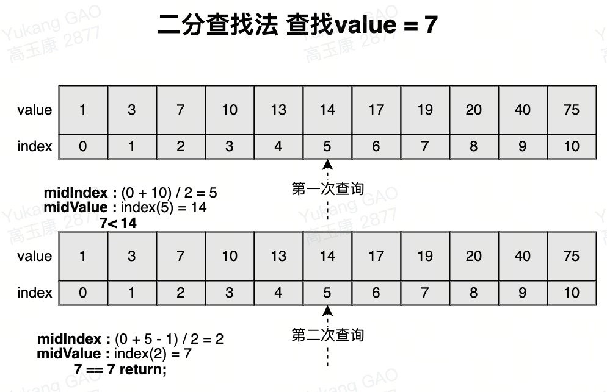
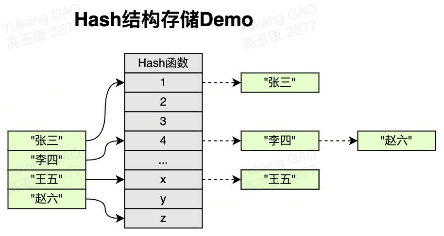
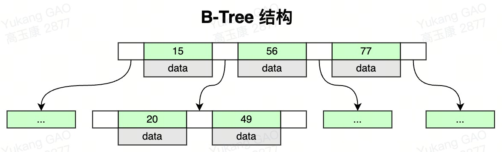
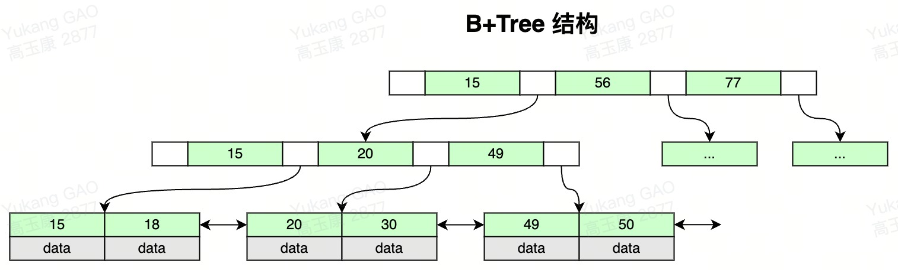
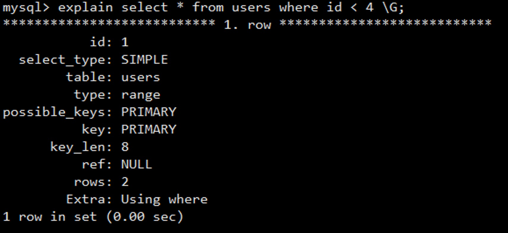
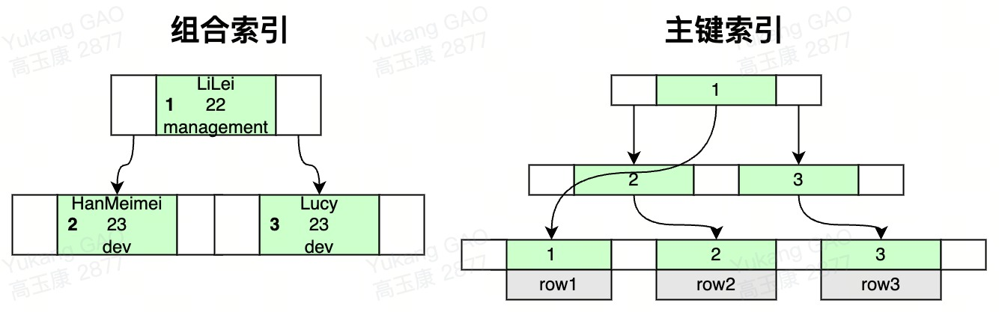

x1索引介绍: 2 -> 按索引存储结构分类: B-Tree索引;Hash索引;FullText全文索引;R Tree索引.3 -> 按应用层次分类: 普通索引;唯一索引;主键索引;复合索引.4 -> 按索引键值类型分类: 主键索引;辅助索引(二级索引);5 -> 按数据存储和索引键值逻辑关系分类: 聚集索引(聚簇索引);非聚集索引(非聚簇索引).6
7普通索引:8 -> 介绍: MySQL表中创建的普通索引.9 -> 创建语法: alter table table_name add index index_name `field_name`;10 -> 查看索引: show index from table_name;11 -> 删除索引: drop index index_name on table_name;12 -> 查看建表语句: show create table table_name;13
14唯一索引:15 -> 介绍: 与普通索引类似, 唯一区别就是加索引的字段值必须是唯一存在, 允许是空值.16 -> 创建语法: alter table table_name add unique index index_name `field_name`;17
18主键索引: 19 -> 介绍: 一种特殊的唯一索引, 每个表中只能有一个主键索引.20 -> 创建语法: alter table table_name add primary key `field_name`;21
22复合索引: 23 -> 介绍: 给多个列上创建一个索引. 相比多个单一索引, 复合索引所需的开销更小.24 -> 细分: 复合索引分为窄索引和宽索引. 能使用窄索引就不用宽索引, 因为窄索引比宽索引更有效.25 --> 窄索引: 索引列在1~2列.26 --> 宽索引: 索引列超过2列.27 -> 创建语法: alter table table_name add index index_name (`field_name1`, `field_name2`, ..); 28 -> 注意:29 --> 表中不要添加过多的索引, 对更新效率有很大影响.30 --> 创建的(fild_name1, field_name2)就不用在单独创建filed_name1索引遵从最左前缀原则.31
32全文索引:33 -> 介绍: 针对大文本数据检索, 从mysql5.6以就支持全文检索, 大大提高了对大文本的检索(比like性能高很多).34 -> 创建语法: alter table table_name add fulltext index_name (`field_name`); 35 -> 使用sql: select * from table_name where match(field_name) against(条件);36 -> 注意:37 --> 全文索引必须在字符串;文本字段上建立.38 --> 全文索引字段值必须在最小字符和最大字符之间的才会有效.(innodb:3-84;myisam:4-84)39 --> 全文索引字段值要进行切词处理, 按syntax字符进行切割(例如b+aaa, 切分成b和aaa).40 --> 全文索引匹配查询, 默认使用的是等值匹配, 例如a匹配a, 不会匹配ab, ac. 41 --> 如果想匹配可以在布尔模式搜索, select * from table_name match(field_name) against('a*' in boolean mode);42
43聚簇索引:44 -> 介绍: 数据与索引存储在一块儿, 聚簇索引是一种数据存储方式, InnoDB聚簇索引按照主键顺序构建B+Tree结构, B+Tree所有叶子节点的数据就是行记录, 行记录和主键值存储在一起, 按主键顺序存储了整张表的数据, 通常"主键索引就是聚簇索引".45 -> 规定: InnoDB引擎必须要存在聚簇索引.46 --> 如果定义了主键, 主键索引就是聚簇索引.47 --> 如果没定义主键, 第一个非空的唯一列就是局促索引.48 --> 如果不存在非空的唯一列, 就创建一个隐藏rowId作为聚簇索引.49
50非聚簇索引:51 -> 介绍: 数据与索引分开存储, MyISAM数据表的索引文件和数据是分开存储的, 先通过索引文件查找到对应数据的地址值, 在拿到地址值查找数据, 可能会增加IO.52
53聚簇索引与非聚簇索引对比:54 -> B+Tree的叶子节点存放主键索引值和行记录就属于聚簇索引;如果索引值和行记录分开存放就属于非聚簇索引.55
56辅助索引:57 -> 介绍: 也叫二级索引, 是根据索引列构建B+Tree结构. 但在B+Tree的叶子节点中只存了索引列和主键的信息. 58 -> 优点: 59 --> 辅助索引占用的空间会比聚簇索引小很多.60 --> 创建辅助索引就是为了提升查询效率, 主要是防止回表.61 --> 一个表InnoDB只能创建一个聚簇索引, 但可以创建多个辅助索引.62
63关于索引常见问题:64 -> 问题1: 为啥InnoDB表必须要有主键? 65 -> 回答: 因为InnoDB表使用的存储引擎是B+Tree而B+Tree必须要有一个自增的主键来构成索引结构.如果不自己建主键的话, Mysql内部会自动生成唯一的列作为主键.66 -> 问题2: 为啥要使用自增的整型?67 -> 回答: 假如使用uuid作为uuid作为主键进行存储的话, 没办法进行快速的比较进行查找, 并且uuid存储的空间比较大. 自增的话方便快速存储.68 -> 问题3: 为什么非主键索引结构叶子节点存储的是主键值? 69 -> 回答: 为了数据一致性和节省存储空间. 完整性的数据只需要维护一份就行, 就在主键索引中维护即可.
111介绍: 二分查找法又称作折半查找法, 在"有序数组"中查找指定的数据的搜索算法.2
3优点: 等值查询, 范围查询性能优秀, 时间复杂度O(N/2).4缺点: 修改删除数据需要重新将数据维护成有序的数组, 成本高.5 6查找步骤:7 -> 首先定位left和right两个指针.8 -> 计算(left+right)/2.9 -> 判断除2后索引位置值与目标值的大小比对.10 -> 索引位置值大于目标值就-1, right移动;如果小于目标值就+1, left移动.11

61介绍: Hash底层实现是由Hash表实现的, 根据键值<key,value>存储数据的结构, 比较适合通过key去查找value, 单个key等值查询.2
3应用: 4 -> MySQL Memory存储Hash索引.5 -> InnoDB自适应Hash索引.6 
101特点:2 -> 索引值和Data数据分布在整棵树结构中.3 -> 每个节点可以存放多个索引值和Data数据.4 -> 树节点中的多个索引值从左到右升序排列.5
6搜索: 从根节点开始, 对节点内的索引值序列采用二分法查找, 命中直接返回. 否则进入子节点重复查找, 直到对应的的节点指针为空或已经是叶子节点了才结束. 7
8应用:9 -> 适合做等值查询, Mongo.10 
151特点: 2 -> 非叶子节点不存储data数据, 只存储索引值, 这样便于存储更多的索引值.3 -> 叶子节点包含了所有的索引值和data数据.4 -> 叶子节点用指针连接, 提高区间的访问性能.5
6B+Tree与B-Tree对比:7 -> B+Tree更适合范围查找, 只需要查找定位两个节点的索引值, 然后利用叶子节点的指针进行遍历即可.8 -> B-Tree范围查找时, 需要编列所有的节点和数据, B-Tree更适合等值查找, 找到对应的索引节点直接返回数据.9
10MySQL为啥使用B+Tree?11 -> 二叉树: 缺点在插入数据的时候,可能会形成单边树, 查找的时候IO效率比较低.12 -> 红黑树: 会自动平衡二叉树, 可以解决二叉树单边问题, 红黑树每个节点只有2个子节点, 可能会产生很多层级查找的时候IO效率也比较低.13 -> B-Tree: 每个节点右固定的大小, MySQL默认是16k, 虽然可以解决红黑树多层级问题, 但是每个节点都有数据, 如果节点对应的数据比较大时就不能有太多的横向节点, 就会导致红黑树一样的多层级问题, 查找的时候IO效率比较低.14 -> B+Tree: 非叶子节点不会包含数据, 在固定大小(16k)下就能存储更多的索引值, 可以减少树节点层级, 有效的减少磁盘IO, 所有数据都在叶子节点, 叶子节点之间还有指针相互指向, 就方便了范围查找(通常MySQL 三层就可以解决).15 
591介绍: 主要针对select语句进行分析.2
3属性:4 -> select_type: 表示查询的类型. 5 --> SIMPLE: 表示查询语句不包含子查询或union(最常见).6 --> PRIMARY: 表示此查询是最外层的查询(先执行).7 --> UNION: 表示此查询是UNION的第二个或后续的查询.8 --> DEPENDENT UNION: UNION中的第二个或后续的查询语句, 使用了外面查询结果.9 --> UNION RESULT: UNION的结果.10 --> SUBQUERY: SELECT子查询语句.11 --> DEPENDENT SUBQUERY: SELECT子查询语句依赖外层查询的结果.12
13 -> type: (重要)表示存储引擎查询数据的方式, 可以判断全表扫描还是基于扫描部分扫描.14 --> null: 表示不用访问表, 速度最快.15 --> system|const: 使用主键索引或者唯一索引进行等值常量查询, 效率比较高, 如果查询1条就是system.16 --> eq_ref: 使用多表关联时候on之后的条件是主键索引|唯一索引关联的.17 --> ref: 使用普通索引进行筛选.18 --> range: 使用普通索引进行范围查询(>;>=;<;<=;in).19 --> index: 使用全表索引.20 --> all: 全表扫描, 性能最差, 需要优化.21 --> 建议: sql至少优化到range级别.22
23 -> possible_keys: 显示使用到的索引(可能使用到).24
25 -> key: 在执行查询时, 真正使用到索引.26 27 -> key_len: 表示查询使用的索引的字节数量. 可以判断是否使用了组合索引.28 --> 字符类型计算规则:29 ---> 字符集: latin1=1;gbk=2;utf8=3;utf8mb4=4;30 ---> char(n): n*字符集长度.31 ---> varchar(n): n*字符集长度+2字节.32 --> 数值类型计算规则:33 ---> TINYINT: 1个字节.34 ---> SMALLINT: 2个字节.35 ---> MEDIUMINT: 3个字节.36 ---> INT|FLOAT: 4个字节.37 ---> BIGINT|DOUBLE: 8个字节.38 --> 时间类型计算规则:39 ---> DATE: 3个字节.40 ---> TIMESTAMP: 4个字节.41 ---> DATETIME: 8个字节.42 --> 字段类型计算规则:43 ---> NULL属性占用1个字节(NOT NULL不存在).44 --> Demo: 如一个user表中name类型为varchar(50), 那么使用到name索引值的话key_len=53(50长度+2可变长+ 1(Default NULL)).45
46 -> ref: 表示查询使用的索引或常量值, 用于连接表的列或常量值, 是一个指向参考表的指针.47 --> NULL: 表示查询使用的是全表扫描.48 --> CONST: 则表示查询使用的是常量表达式.49
50 -> rows: 估算SQL要查询到结果需要扫描多少行记录. 原则上rows是越少效率越高, 可以直观的了解到SQL效率高低.51
52 -> Extra: 表示额外的信息.53 --> Using index: 性能最高, 使用覆盖索引, 不需要回表.54 --> Using index condition: 查询的列不完全被索引覆盖, where条件中是一个前导列的范围.55 --> Using where: 使用where语句来处理结果, 查询的列未被索引覆盖, 需要回表.56 --> Using temprorary: distinct操作, 使用到了内存表, 一般出现于去重|分组等操作.57 --> Using filesort: 效率很低, 需要进行优化, 查询的结果需要在内存中进行排序.58 --> Select tables optimized away: 使用某些聚合函数(比如max;min)来访问存在索引的某个字段.59
81回表查询: 2 -> 前提InnoDB存储引擎有聚簇索引和辅助索引. 3 -> 聚簇索引的叶子节点存储行记录, 每张表必须要有且只有一个. 4 -> 辅助索引的叶子节点存储的是主键值和索引字段值, 通过辅助索引无法直接定位行记录, 5 -> 通常情况下, 需要扫码两遍索引树. "先通过辅助索引定位主键值, 然后再通过聚簇索引定位行记录", 这就叫做回表查询, 它的性能比扫一遍索引树低.6
7覆盖索引:8 -> 只需要在一棵索引树上就能获取SQL所需的所有列数据, 无需回表, 速度更快.
421介绍: 2 -> 按照索引创建的顺序, 从左向右匹配直到遇到范围查询(> < between)后续索引失效.3 -> 比如(A,B,C)只有找到A匹配之后在去匹配B, B匹配之后再去匹配C. 不能跨级匹配, 比如A匹配之后没有匹配B而直接匹配C不会的.4
5举例说明: 6 -> 数据准备:7 CREATE TABLE `employees` (8 `id` INT (11) NOT NULL AUTO_INCREMENT,9 `name` VARCHAR (24) NOT NULL DEFAULT '' COMMENT '姓名',10 `age` INT (11) NOT NULL DEFAULT '0' COMMENT '年龄',11 `position` VARCHAR (20) NOT NULL DEFAULT '' COMMENT '职位',12 `hire_time` TIMESTAMP NOT NULL DEFAULT CURRENT_TIMESTAMP COMMENT '入职时间',13 PRIMARY KEY (`id`),14 KEY `idx_name_age_position` (`name`, `age`, `position`) USING BTREE15 ) ENGINE = INNODB AUTO_INCREMENT = 4 DEFAULT CHARSET = utf8 COMMENT = '员工表';16
17 INSERT INTO employees(name,age,position,hire_time) VALUES('LiLei',22,'manager',NOW());18 INSERT INTO employees(name,age,position,hire_time) VALUES('HanMeimei',23,'dev',NOW());19 INSERT INTO employees(name,age,position,hire_time) VALUES('Lucy',23,'dev',NOW());20 -> 说明:21 --> 实例1: explain SELECT * FROM employees WHERE name= 'LiLei';22 id|select_type|table |type|possible_keys |key_len|ref |rows|Extra| 23 1 | SIMPLE |employees| ref|idx_name_age_position| 74 |const| 1 | NULL|24 --> 说明: 使用了组合索引, key_len是74(24*3+2, 24个字符, 3是urf8编码, 2是可变长度, 如果默认值为null的话需要在加1).25 --> 实例2: EXPLAIN SELECT * FROM employees WHERE name = 'LiLei' AND age = 22 AND position ='manager';26 id|select_type|table |type|possible_keys |key_len|ref |rows|Extra| 27 1 | SIMPLE |employees| ref|idx_name_age_position| 140 |const| 1 | NULL|28 --> 说明: 使用了索引, key_len=140(24*3+2 + 4 + 20*3+2=140 int默认为4字节).29 --> 实例3: EXPLAIN SELECT * FROM employees WHERE age = 22 AND position ='manager';30 id|select_type|table |type|possible_keys |key_len|ref |rows|Extra| 31 1 | SIMPLE |employees| ref|NULl | NULL |NULL | 3 | NULL|32 --> 说明: 不会使用索引, 复合索引存储, 是匹配第一个字段name, 在匹配第二个字段age, 在匹配第三个字段position.33 --> 实例4: EXPLAIN SELECT * FROM employees WHERE age > 22 and name = 'LiLei' AND position ='manager'; 34 id|select_type|table |type |possible_keys |key_len|ref |rows|Extra 35 1 | SIMPLE |employees| range|idx_name_age_position| 78 |NULL | 1 |Using index condi36 --> 说明: 此时生效的索引只有name和age, position没有生效. 原因, 在做范围查找的时候第三个索引就没办法进行精确匹配了.37
38 -> 注意:39 --> 1. 不在索引列上做任何操作(计算;函数;(自动or手动)类型转换), 否则会导致索引失效而转向全表扫描.40 --> 2. 在复合索引中使用非最后一个索引的列进行范围查找就会导致后边的索引列失效, 就是查询语句4.41 --> 3. 字符串在筛选的时候不加引号, 会进行类型强制转换, 会导致全表扫描.42
81索引失效查询: 2 -> 1. like查询: 以%开头的就会失效比如like '%1%';like '%1'.3 -> 2. NULL查询: is null|is not null也无法使用索引, 建议给一些字段设置空字符串.4 -> 3. !=或<>查询: mysql在使用不等于(!=或者<>)的时候无法使用索引会导致全表扫描.5
6索引可能会失效查询:7 -> 1. or或者in查询: mysql内部优化器会根据检索比例;表大小等多个因素整体评估是否使用索引.8
1161介绍: Trace工具主要用于跟踪和分析MySQL数据库中的查询语句和事务, 以便优化和调试应用程序的性能问题.2功能: 3 -> 1. 可以捕获MySQL数据库的执行计划;查询缓存;锁;IO和网络等信息,快速识别和解决性能问题.4 -> 2. 可以生成详细的报告和图表, 以便更好地理解和分析MySQL数据库的性能瓶颈.5
6启用命令: set session optimizer_trace = 'enabled=on',end_markers_in_json=on; (会影响性能).7
8使用命令: select * from employees where name > 'a';9 select * from information_schema.OPTIMIZER_TRACE;10
11trace结果:12 {13 "steps": [14 {15 "join_preparation": { ‐‐第一阶段：SQL准备阶段16 …17 },18 {19 "join_optimization": {20 "steps": [21 {22 "condition_processing": { ‐‐第二阶段：SQL优化阶段23 …24 },25 {26 "table_dependencies": [ -- 表依赖详情27 …28 ] /* table_dependencies */29 },30 {31 "ref_optimizer_key_uses": [32 ] /* ref_optimizer_key_uses */33 },34 {35 "rows_estimation": [ -- 预估表的访问成本36 {37 "table": "`employees`",38 "range_analysis": {39 "table_scan": {40 "rows": 3, ‐‐扫描行数41 "cost": 3.7 --查询成本（没有单位数值越大成本越高）42 } /* table_scan */,43 "potential_range_indices": [‐‐查询可能使用的索引44 {45 "index": "PRIMARY",46 "usable": false,47 "cause": "not_applicable"48 },49 {50 "index": "idx_name_age_position", --辅助索引51 "usable": true,52 "key_parts": [53 "name",54 "age",55 "position",56 "id"57 ] /* key_parts */58 }59 ] /* potential_range_indices */,60 "setup_range_conditions": [61 ] /* setup_range_conditions */,62 "group_index_range": {63 "chosen": false,64 "cause": "not_group_by_or_distinct"65 } /* group_index_range */,66 "analyzing_range_alternatives": { --分析各个索引使用成本67 "range_scan_alternatives": [68 {69 "index": "idx_name_age_position",70 "ranges": [71 "a < name" ‐‐索引使用范围72 ] /* ranges */,73 "index_dives_for_eq_ranges": true,74 "rowid_ordered": false, ‐‐使用该索引获取的记录是否按照主键排序75 "using_mrr": false, 76 "index_only": false, ‐‐是否使用覆盖索引77 "rows": 3, ‐‐索引扫描行数78 "cost": 4.61, ‐‐索引使用成本79 "chosen": false, ‐‐是否选择该索引80 "cause": "cost"81 }82 ] /* range_scan_alternatives */,83 "analyzing_roworder_intersect": {84 "usable": false,85 "cause": "too_few_roworder_scans"86 } /* analyzing_roworder_intersect */87 } /* analyzing_range_alternatives */88 } /* range_analysis */89 }90 ] /* rows_estimation */91 },92 {93 "considered_execution_plans": [94 {95 "plan_prefix": [96 ] /* plan_prefix */,97 "table": "`employees`",98 "best_access_path": { ‐‐最优访问路径99 "considered_access_paths": [‐‐最终选择的访问路径 100 {101 "access_type": "scan",--访问类型：为scan，全表扫描102 "rows": 3,103 "cost": 1.6,104 "chosen": true ‐‐确定选择105 }106 ] /* considered_access_paths */107 } /* best_access_path */,108 "cost_for_plan": 1.6,109 "rows_for_plan": 3,110 "chosen": true111 }112 ]113 }114 }115
116结果分析: 查看的时候, 如果做索引优化只需要查看rows_estimation;analyzing_range_alternatives;considered_execution_plans.